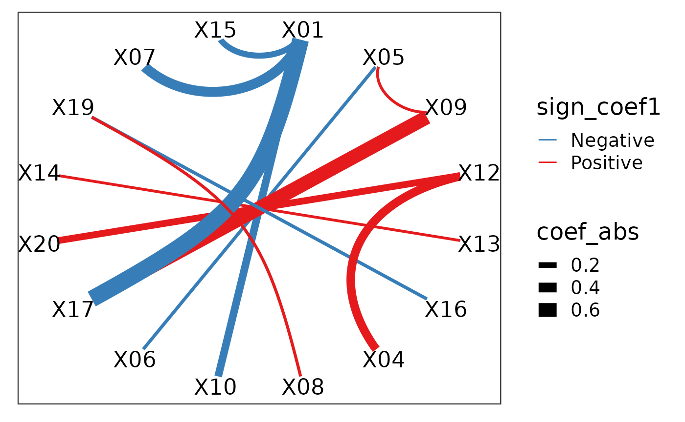

An introduction to the cpop package
Kevin Y.X. Wang
School of Mathematics and Statistics, The University of Sydney, AustraliaCPOP.RmdLoading data
data(cpop_data_binary, package = 'CPOP') attach(cpop_data_binary) z1 = pairwise_col_diff(x1) z2 = pairwise_col_diff(x2) z3 = pairwise_col_diff(x3) boxplot(cbind(x1,x2))

CPOP
cpop_result = cpop_model(z1, z2, y1, y2, alpha = 1, n_features = 10)
## Absolute colMeans difference will be used as the weights for CPOP## Fitting CPOP model using alpha = 1## Based on previous alpha, 0 features are kept## CPOP1 - Step 01: Number of selected features: 0 out of 190## CPOP1 - Step 02: Number of selected features: 9 out of 190## CPOP1 - Step 03: Number of selected features: 16 out of 190## 10 features was reached.## A total of 16 features were selected.## Removing sources of collinearity gives 13 features.## 10 features was reached.## A total of 13 features were selected.## CPOP2 - Sign: Step 01: Number of leftover features: 9 out of 13## The sign matrix between the two data:##
## -1 0 1
## -1 0 0 1
## 0 0 0 0
## 1 3 0 0## CPOP2 - Sign: Step 02: Number of leftover features: 8 out of 13
## The sign matrix between the two data:##
## -1 0 1
## -1 0 0 0
## 0 0 0 0
## 1 1 0 0## CPOP2 - Sign: Step 03: Number of leftover features: 8 out of 13
## The sign matrix between the two data:##
## -1 0 1
## -1 0 0 0
## 0 0 0 0
## 1 0 0 0plot_cpop(cpop_result, "text")
## $plot
##
## $data
## # A tibble: 8 x 3
## coef_name coef1 coef2
## <fct> <dbl> <dbl>
## 1 X01--X10 -0.322 -0.246
## 2 X09--X17 0.722 0.521
## 3 X11--X14 0.130 0.00292
## 4 X12--X20 0.404 0.170
## 5 X01--X07 -0.437 -0.408
## 6 X01--X15 -0.158 -0.334
## 7 X01--X17 -0.901 -0.644
## 8 X04--X12 0.353 0.431Naive Lasso
lasso_result = naive_glmnet(z1, z2, y1, y2, alpha = 1, intercept = FALSE) lasso_result
## $glmnet1
##
## Call: glmnet::cv.glmnet(x = z1, y = y1, alpha = 1, intercept = FALSE)
##
## Measure: Mean-Squared Error
##
## Lambda Measure SE Nonzero
## min 0.09523 0.3907 0.04071 4
## 1se 0.20999 0.4282 0.04976 2
##
## $glmnet2
##
## Call: glmnet::cv.glmnet(x = z2, y = y2, alpha = 1, intercept = FALSE)
##
## Measure: Mean-Squared Error
##
## Lambda Measure SE Nonzero
## min 0.1218 0.4677 0.04577 5
## 1se 0.2565 0.5088 0.06176 2
##
## $coef_tbl
## $coef_tbl[[1]]
## # A tibble: 191 x 3
## coef_name coef1 coef2
## <chr> <dbl> <dbl>
## 1 (Intercept) 0 0
## 2 X01--X02 0 0
## 3 X01--X03 0 0
## 4 X01--X04 -0.129 -0.0739
## 5 X01--X05 0 0
## 6 X01--X06 0 0
## 7 X01--X07 0 0
## 8 X01--X08 0 -0.0275
## 9 X01--X09 -0.121 -0.0727
## 10 X01--X10 0 0
## # … with 181 more rows
##
##
## attr(,"class")
## [1] "cpop" "list"Plotting
plot_cpop(cpop_result)
## $plot
##
## $data
## # A tibble: 8 x 3
## coef_name coef1 coef2
## <fct> <dbl> <dbl>
## 1 X01--X10 -0.322 -0.246
## 2 X09--X17 0.722 0.521
## 3 X11--X14 0.130 0.00292
## 4 X12--X20 0.404 0.170
## 5 X01--X07 -0.437 -0.408
## 6 X01--X15 -0.158 -0.334
## 7 X01--X17 -0.901 -0.644
## 8 X04--X12 0.353 0.431plot_cpop(lasso_result)
## $plot
##
## $data
## # A tibble: 2 x 3
## coef_name coef1 coef2
## <fct> <dbl> <dbl>
## 1 X01--X04 -0.129 -0.0739
## 2 X01--X09 -0.121 -0.0727plot_cpop(cpop_result, type = "ggraph")
## $plot
##
## $data
## # A tibble: 8 x 7
## from to coef1 coef2 coef_avg coef_abs sign_coef1
## <chr> <chr> <dbl> <dbl> <dbl> <dbl> <chr>
## 1 X01 X10 -0.322 -0.246 -0.284 0.284 Negative
## 2 X09 X17 0.722 0.521 0.621 0.621 Positive
## 3 X11 X14 0.130 0.00292 0.0666 0.0666 Positive
## 4 X12 X20 0.404 0.170 0.287 0.287 Positive
## 5 X01 X07 -0.437 -0.408 -0.423 0.423 Negative
## 6 X01 X15 -0.158 -0.334 -0.246 0.246 Negative
## 7 X01 X17 -0.901 -0.644 -0.773 0.773 Negative
## 8 X04 X12 0.353 0.431 0.392 0.392 Positiveplot_cpop(lasso_result, type = "ggraph")
## $plot
##
## $data
## # A tibble: 2 x 7
## from to coef1 coef2 coef_avg coef_abs sign_coef1
## <chr> <chr> <dbl> <dbl> <dbl> <dbl> <chr>
## 1 X01 X04 -0.129 -0.0739 -0.101 0.101 Negative
## 2 X01 X09 -0.121 -0.0727 -0.0968 0.0968 Negativebeta## X01--X02 X01--X03 X01--X04 X01--X05 X01--X06 X01--X07
## -0.49258985 -0.14860754 -0.82375058 0.07058263 -0.55084665 0.03776694
## X01--X08 X01--X09 X01--X10 X01--X11 X01--X12 X01--X13
## -0.67372080 -0.80604437 0.16022995 -0.50233150 0.00000000 0.00000000
## X01--X14 X01--X15 X01--X16 X01--X17 X01--X18 X01--X19
## 0.00000000 0.00000000 0.00000000 0.00000000 0.00000000 0.00000000
## X01--X20 X02--X03 X02--X04 X02--X05 X02--X06 X02--X07
## 0.00000000 0.00000000 0.00000000 0.00000000 0.00000000 0.00000000
## X02--X08 X02--X09 X02--X10 X02--X11 X02--X12 X02--X13
## 0.00000000 0.00000000 0.00000000 0.00000000 0.00000000 0.00000000
## X02--X14 X02--X15 X02--X16 X02--X17 X02--X18 X02--X19
## 0.00000000 0.00000000 0.00000000 0.00000000 0.00000000 0.00000000
## X02--X20 X03--X04 X03--X05 X03--X06 X03--X07 X03--X08
## 0.00000000 0.00000000 0.00000000 0.00000000 0.00000000 0.00000000
## X03--X09 X03--X10 X03--X11 X03--X12 X03--X13 X03--X14
## 0.00000000 0.00000000 0.00000000 0.00000000 0.00000000 0.00000000
## X03--X15 X03--X16 X03--X17 X03--X18 X03--X19 X03--X20
## 0.00000000 0.00000000 0.00000000 0.00000000 0.00000000 0.00000000
## X04--X05 X04--X06 X04--X07 X04--X08 X04--X09 X04--X10
## 0.00000000 0.00000000 0.00000000 0.00000000 0.00000000 0.00000000
## X04--X11 X04--X12 X04--X13 X04--X14 X04--X15 X04--X16
## 0.00000000 0.00000000 0.00000000 0.00000000 0.00000000 0.00000000
## X04--X17 X04--X18 X04--X19 X04--X20 X05--X06 X05--X07
## 0.00000000 0.00000000 0.00000000 0.00000000 0.00000000 0.00000000
## X05--X08 X05--X09 X05--X10 X05--X11 X05--X12 X05--X13
## 0.00000000 0.00000000 0.00000000 0.00000000 0.00000000 0.00000000
## X05--X14 X05--X15 X05--X16 X05--X17 X05--X18 X05--X19
## 0.00000000 0.00000000 0.00000000 0.00000000 0.00000000 0.00000000
## X05--X20 X06--X07 X06--X08 X06--X09 X06--X10 X06--X11
## 0.00000000 0.00000000 0.00000000 0.00000000 0.00000000 0.00000000
## X06--X12 X06--X13 X06--X14 X06--X15 X06--X16 X06--X17
## 0.00000000 0.00000000 0.00000000 0.00000000 0.00000000 0.00000000
## X06--X18 X06--X19 X06--X20 X07--X08 X07--X09 X07--X10
## 0.00000000 0.00000000 0.00000000 0.00000000 0.00000000 0.00000000
## X07--X11 X07--X12 X07--X13 X07--X14 X07--X15 X07--X16
## 0.00000000 0.00000000 0.00000000 0.00000000 0.00000000 0.00000000
## X07--X17 X07--X18 X07--X19 X07--X20 X08--X09 X08--X10
## 0.00000000 0.00000000 0.00000000 0.00000000 0.00000000 0.00000000
## X08--X11 X08--X12 X08--X13 X08--X14 X08--X15 X08--X16
## 0.00000000 0.00000000 0.00000000 0.00000000 0.00000000 0.00000000
## X08--X17 X08--X18 X08--X19 X08--X20 X09--X10 X09--X11
## 0.00000000 0.00000000 0.00000000 0.00000000 0.00000000 0.00000000
## X09--X12 X09--X13 X09--X14 X09--X15 X09--X16 X09--X17
## 0.00000000 0.00000000 0.00000000 0.00000000 0.00000000 0.00000000
## X09--X18 X09--X19 X09--X20 X10--X11 X10--X12 X10--X13
## 0.00000000 0.00000000 0.00000000 0.00000000 0.00000000 0.00000000
## X10--X14 X10--X15 X10--X16 X10--X17 X10--X18 X10--X19
## 0.00000000 0.00000000 0.00000000 0.00000000 0.00000000 0.00000000
## X10--X20 X11--X12 X11--X13 X11--X14 X11--X15 X11--X16
## 0.00000000 0.00000000 0.00000000 0.00000000 0.00000000 0.00000000
## X11--X17 X11--X18 X11--X19 X11--X20 X12--X13 X12--X14
## 0.00000000 0.00000000 0.00000000 0.00000000 0.00000000 0.00000000
## X12--X15 X12--X16 X12--X17 X12--X18 X12--X19 X12--X20
## 0.00000000 0.00000000 0.00000000 0.00000000 0.00000000 0.00000000
## X13--X14 X13--X15 X13--X16 X13--X17 X13--X18 X13--X19
## 0.00000000 0.00000000 0.00000000 0.00000000 0.00000000 0.00000000
## X13--X20 X14--X15 X14--X16 X14--X17 X14--X18 X14--X19
## 0.00000000 0.00000000 0.00000000 0.00000000 0.00000000 0.00000000
## X14--X20 X15--X16 X15--X17 X15--X18 X15--X19 X15--X20
## 0.00000000 0.00000000 0.00000000 0.00000000 0.00000000 0.00000000
## X16--X17 X16--X18 X16--X19 X16--X20 X17--X18 X17--X19
## 0.00000000 0.00000000 0.00000000 0.00000000 0.00000000 0.00000000
## X17--X20 X18--X19 X18--X20 X19--X20
## 0.00000000 0.00000000 0.00000000 0.00000000Prediction
# z3 = pairwise_col_diff(x3) # boxplot(y3 ~ predict_cpop(cpop_result, newz = z3)$cpop_model_avg) # x3 = matrix(rnorm(n * p, mean = 3, sd = 1), nrow = n, ncol = p) # colnames(x3) = colnames(x1) # z3 = pairwise_col_diff(x3) predict_cpop(cpop_result, newz = z3) %>% ggplot(aes(x = cpop_model1, y = cpop_model2)) + geom_point() + geom_abline()

predict_cpop(cpop_result, newz = z3)[,2:3] %>% cor
## cpop_model1 cpop_model2
## cpop_model1 1.0000000 0.9573995
## cpop_model2 0.9573995 1.0000000lasso_pred1 = tibble( lasso_pred1 = predict(lasso_result$glmnet1, newx = z3), lasso_pred2 = predict(lasso_result$glmnet2, newx = z3)) lasso_pred1 %>% cor
## lasso_pred1 lasso_pred2
## lasso_pred1 1.0000000 0.9967798
## lasso_pred2 0.9967798 1.0000000lasso_pred1 %>% ggplot(aes(x = lasso_pred1, y = lasso_pred2)) + geom_point() + geom_abline()

## R version 4.0.1 (2020-06-06)
## Platform: x86_64-apple-darwin17.0 (64-bit)
## Running under: macOS Catalina 10.15.5
##
## Matrix products: default
## BLAS: /Library/Frameworks/R.framework/Versions/4.0/Resources/lib/libRblas.dylib
## LAPACK: /Library/Frameworks/R.framework/Versions/4.0/Resources/lib/libRlapack.dylib
##
## locale:
## [1] en_US.UTF-8/en_US.UTF-8/en_US.UTF-8/C/en_US.UTF-8/en_US.UTF-8
##
## attached base packages:
## [1] stats graphics grDevices utils datasets methods base
##
## other attached packages:
## [1] ggplot2_3.3.1 tibble_3.0.1 CPOP_0.0.24 BiocStyle_2.16.0
##
## loaded via a namespace (and not attached):
## [1] shape_1.4.4 tidyselect_1.1.0 xfun_0.14
## [4] purrr_0.3.4 graphlayouts_0.7.0 lattice_0.20-41
## [7] colorspace_1.4-1 vctrs_0.3.1 generics_0.0.2
## [10] htmltools_0.4.0 viridisLite_0.3.0 yaml_2.2.1
## [13] utf8_1.1.4 rlang_0.4.6 pkgdown_1.5.1.9000
## [16] pillar_1.4.4 withr_2.2.0 glue_1.4.1
## [19] tweenr_1.0.1 RColorBrewer_1.1-2 foreach_1.5.0
## [22] lifecycle_0.2.0 stringr_1.4.0 munsell_0.5.0
## [25] gtable_0.3.0 codetools_0.2-16 memoise_1.1.0
## [28] evaluate_0.14 labeling_0.3 knitr_1.28
## [31] forcats_0.5.0 fansi_0.4.1 tidygraph_1.2.0
## [34] Rcpp_1.0.4.6 scales_1.1.1 backports_1.1.7
## [37] BiocManager_1.30.10 desc_1.2.0 farver_2.0.3
## [40] fs_1.4.1 gridExtra_2.3 ggforce_0.3.1
## [43] digest_0.6.25 stringi_1.4.6 bookdown_0.19
## [46] dplyr_1.0.0 ggrepel_0.8.2 polyclip_1.10-0
## [49] grid_4.0.1 rprojroot_1.3-2 cli_2.0.2
## [52] tools_4.0.1 magrittr_1.5 proxy_0.4-24
## [55] glmnet_4.0 ggraph_2.0.3 crayon_1.3.4
## [58] tidyr_1.1.0 pkgconfig_2.0.3 MASS_7.3-51.6
## [61] ellipsis_0.3.1 Matrix_1.2-18 assertthat_0.2.1
## [64] rmarkdown_2.2 viridis_0.5.1 iterators_1.0.12
## [67] R6_2.4.1 igraph_1.2.5 compiler_4.0.1